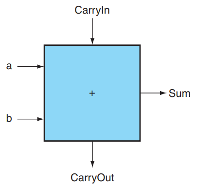
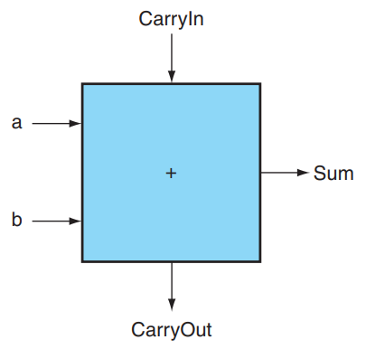
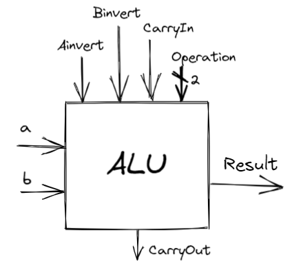
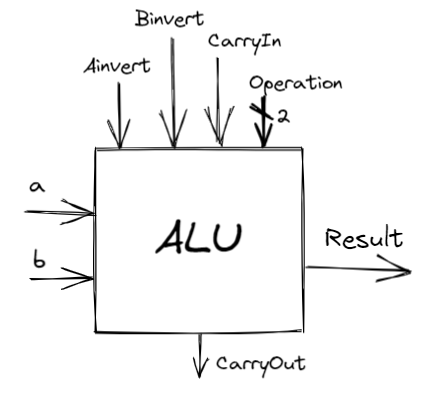

3 Arithmetic¶
约 3475 个字 预计阅读时间 12 分钟
提示
在开始本章之前，请确保自己了解各种二进制下表示数的相关方法。
3.1 一个基本的 ALU¶
世界上不存在减法。众所周知，减法就是加上相反数。所以这个世界上不存在减法。
Overflow。硬件规模是有限的，因此运算结果超过这个限制时，就会发生溢出。对于有符号加法，当正数和正数相加得到负数，或者负数和负数相加得到正数时，就可以判定溢出。对于无符号加法，如果结果小于二者中任意一个，也可以判定溢出。
- 关于 Overflow，硬件层面需要能检测溢出，然后将这个指令的地址存储到一个特别的寄存器 EPC 里，然后跳转到 OS 中专门的程序中来处理这个溢出（异常处理）；
ALU, Arithmetic Logic Unit，算术逻辑单元，执行一些算术运算或者逻辑运算。
3.1.1 1-bit ALU¶
（下面这部分内容在课本附录 A.5 开始的地方）
在数字逻辑设计这门课程中，我们学过 AND, OR, XOR 这些 gates，以及 inverter 和 mux 这些东西，我们尝试用这些东西攒一个 ALU 出来。在这一节中，我们希望 ALU 具有加法、减法、与运算、或运算和比较的能力。
我们先考虑 1 bit ALU 的构造。我们学习过 1 bit Full Adder 的构造：
 
上左图是全加器的具体构造，右图是我们将其进行封装后的表示方式。
我们结合一个 mux，就可以构造一个支持与、或以及加法运算的 1 bit ALU：

其中 Operation 是用来指明 mux 采取哪个结果的信号，值为 00 01 10 分别对应与、或、加法运算。
3.1.2 加上减法和 NOR！¶
减法运算怎么办呢？众所周知，由于补码有 \(x + \bar x = 111\dots111_2 = -1\)，因此 \(-x = \bar x + 1\)，所以 \(a - b = a + (-b) = a + \bar b + 1\)。据此我们可以构造这样的结构：

其中 Binvert 用来指明是否需要将结果取反；在计算减法时，我们将 Binvert 设为 1 ，然后将 CarryIn 也设为 1 ， Operation 设为 2 ，这样我们的结果就是 \(a + \bar b + 1\)。
NOR 运算： a NOR b = NOT(a OR b) = (NOT a) AND (NOT b) ，因此 NOR 运算可以这样实现：
 
上右图是我们目前的 1 bit ALU 的抽象结构。
3.1.3 串联得到 64-bit ALU！¶
有了 1 bit 的 ALU，我们就可以构造出 RISC-V 所需的 64 bits 的 ALU 了：

可以看到，对于 64 位的加法、减法、AND, OR, NOR 运算，这样的 64 位 ALU 都可以完成。
同时也可以注意到，这里面除了我们熟悉的内容外，还多了 Less , Set 和 Overflow 这些位。它们是用来干什么的呢？
首先 Overflow 是容易理解的，它用来表示加法或减法有没有出现溢出的现象；显然这个判断只需要在 ALU63，即 Most Significant Bit 才需要进行。容易证明，如果 \(C_{in} \oplus C_{out} = 1\)，那么存在溢出；因此 ALU63 只需要添加一个额外的 XOR 门即可完成这一判断。
Less 和 Set 共同使用，是为了实现 slt rd, rs1, rs2 这个操作（SLT 即 Set Less Than）的。这个操作的含义是，如果 rs1 < rs2 ，那么将 rd 置为 1 ，否则置为 0 。如何进行这一判断呢？很简单，如果 rs1 - rs2 的结果为负，也就是说如果 rs1 - rs2 结果的最高位是 1 ，那么就说明 rs1 < rs2 。所以等价地，对于 slt 这个操作，我们只需要将 ALU63 中加法器的结果赋值给 Result0 ，即运算结果的 Least Significant Bit，而将其他位的结果 Result1 ~ Result63 都设成 0，就可以完成 slt 操作了。
所以可以看到，上图中，除了 ALU0 的 Less 来自 ALU63 的 Set 外，其他 ALU 的 Less 都是 0 。
结合上述讨论，上图中 ALU0 ~ ALU62 的结构如下第一张图所示，ALU63 的结构如下第二张图所示：


（注：第二张图中的 Overflow Detection 被复杂化了，实际上可以通过 CarryIn 和 CarryOut 的异或完成的。）
可以看到， Operation 增加了 3 的取值，这个取值表示进行 slt 操作。
3.1.4 一点优化！¶
之前我们也讨论过，如果做减法或者 slt 的话，需要将 Binvert 和 ALU0 的 CarryIn 设成 1 ，如果是加法的话这两个信号都是 0 ；其他运算用不到这两个信号。因此这两个信号始终取值相等，我们可以将这两个信号合并为一个，称之为 Bnegate 。
另外，我们也有 beq ， bne 这样的操作，结合 Common case fast 的设计思想，我们将判断结果是否为 0 的功能也直接加到 ALU 里。
结合上述两个思路，我们形成了最终的 64-bit ALU！

对于这样的一个 ALU，我们需要 4 bits 的 control lines，分别是 Ainvert , Bnegate 和 Operation (2 bits)。ALU 的符号和 control lines 的含义如下：


3.1.5 更快的加法¶
上面的 64 位加法的实现方式是通过 1 位加法器串联实现的，这种方式势必需要等待前一个加法器算出结果后才能算后一个的。这种多位加法器的实现称为行波加法器 Ripple Carry Adder, RCA。显然，这种实现方式比较慢。
那么，如何加速呢？
3.1.5.1 Carry Lookahead Adder, CLA¶
课本指出，RCA 缓慢的重要原因是后一个 adder 需要等前一个 adder 的 carry 结果；但我们不妨讨论出现 carry 的可能。第一种可能是，如果 \(a\) 和 \(b\) 都是 1，那么一定会 生成 一个 carry；另一种可能是，如果 \(a\) 和 \(b\) 中有且仅有一个是 1，那么如果传入的 carry 是 1，则这里也会 carry，即 carry 被 传播 了。
也就是说，\(c_{out} = a \cdot b + (a + b)\cdot c_{in}\)。我们记 generate \(g = a\cdot b\)，propagate \(p = a + b\)，则有 \(c_{out} = g + p \cdot c_{in}\)。所以，我们可以这样构造一个全加器：

所以，我们可以推导出如下关系（可以形象理解每一个等式的每一个 term 的来源）：

利用这个关系，我们可以构造这样一个四位加法器：

上面的 PFA, Partial Fully Adder，就是前面我们构造的新全加器的一部分。可以看到，通过这样的方式，我们可以加速加法的运算；但是注意到越到高位，门的 fan-in 就越大，因此不能一直增加的。所以对于更多位数的加法器，我们将上面这样构成的 4-bit CLA 再通过类似的方式串起来！

3.1.5.2 Carry Skip Adder (马德先生没讲)¶
3.1.5.3 Carry Select Adder, CSA¶
体现了 预测 / 冗余 的思想。
这个思路其实比较简单，就是把输入 carry 为 0 或者 1 的情况都算一遍，然后根据实际的情况从中选出正确的那种就好了：


3.2 乘法¶
～～暂时不想学了，听说考的不多～～
V1¶
下面这样的硬件结构可以实现无符号乘法：

大概就是类似于竖式乘法。
V2¶
但是我们发现，例如对于 64 位乘法器，最终需要占 128 位，但是每一次乘法过程中只会用到 64 位，所以根据这个特性我们可以对它进行优化。
大概意思就是每次计算的结果都加到高 64 位，然后再右移，实现在前面的加法过程中只使用 64 位。
TODO: 贴图 & 详细解释
V3¶
观察到 V2 版中，128 位存结果的加法器的空余末若干位，其数量和乘数尚未计算的位数是一致的，所以我们可以直接把乘数存在结果后面。每计算一次，乘数位数减一，结果位数加一，perfect。
TODO: 贴图 & 详细解释
乘有符号数不太一样
- Booth's Algorithm
3.3 除法 暂时不想学了，听说考的不多¶
3.4 浮点运算¶
大部分处理器可能本身并不支持浮点运算，只不过在软件层面可以将浮点运算转换为整数运算。
3.4.1 IEEE 754 浮点表示¶
我们将小数点左边只有 1 位数字的表示数的方法称为 科学记数法, scientific notation，而如果小数点左边的数字不是 0，我们称这个数的表示是一个 规格化数, normalized number。科学记数法能用来表示十进制数，当然也能用来表示二进制数。
IEEE 754 规定了一种浮点数标准：我们将浮点数表示为 \((-1)^S \times F \times 2^E\) 的形式，这里的 \(F \times 2^E\) 是一个规格化数，而 \((-1)^S\) 用来表示符号位：\(S\) 为 0 说明该浮点数为正数，为 1 则为负数；\(F\) 和 \(E\) 也用若干 bits 表示，分别表示尾数和指数，我们稍后讨论。也就是说，我们将其表示为 \(1.\text{xxxxx}_2\times 2^{\text{yyyy}}\) 的形式（为什么小数点左边是 1 呢？因为二进制只有 0 和 1，而规格化要求小数点左边不能为 0）。我们通过科学记数法调整了小数点的位置使其满足规格化的要求，因此我们称这种数的表示方法为 浮点, floating point。
小数点的英文是 decimal point，但是我们这种表示方法不再是 decimal 的了，因此我们起个新名字：二进制小数点, binary point。
IEEE 754 规定了两种精度的浮点数格式，分别是 single precision 和 double precision（分别对应 C 语言中的 float 和 double ），RISC-V 这两种都支持：


可以看到，fraction 的位数越多，浮点数的精度就越高；而 exponent 的位数越多，浮点数能保存的范围就越大。
那么对于 \((-1)^S \times F \times 2^E\)，\(S\) 的二进制表示方法是显然的，仅需要一个 bit 就好了。那么 \(F\) 和 \(E\) 怎么表示呢？如我们之前所说，\(F\) 就是 \(1.\text{xxxxx}_2\) 的形式，这个 1 是固定的，因此 \(F\) 只需要保存 \(\text{xxxxx}\) 的部分就可以了！那么 \(E\) 怎么办呢？注意到这个指数可能是正整数、负整数或 0，因此我们使用一个偏移，对单精度浮点数偏移 127，双精度浮点数偏移 1023（刚好是表示范围的一半！），也就是说我们保存的 exponent 其实是 \(E + bias\) 的二进制。也就是说，对于这样的一个表示，其值是：
课本给出了一个例子：

聪明的小朋友可能会问，0 应该怎么保存呢？毕竟 0 没有前导 1。对于这样的特殊情形，IEEE 754 有特别规定，用特殊的值保存它们：

在上表中：
- 第 1 条表示 0；
- 第 2 条表示非规格化数，这种数主要是为了用来表示一些很小的数，它的取值为 \((-1)^S\cdot (\mathbf{0} + \text{fraction}) \cdot 2 ^ {- \text{bias}}\)；但是并非所有机器都支持这种表示，有的机器会直接抛出一个 exception。我们不考虑非规格数的存在；
- 第 3 条表示正常的浮点数；
- 第 4 条表示无穷大或者无穷小，出现在 exponent overflow 或者浮点数运算中非 0 数除以 0 的情况；
- 第 5 条表示非数，出现在 0/0, inf / inf, inf - inf, inf * 0 的情况
（如果数字过大不能表示，即 overflow，则结果置为 inf；如果数字过小不能表示，即 underflow，则结果置为 0。）
这两种表示法的范围和精度分别是多少呢？
-
范围
- 能表示值的 绝对值 的范围是 \(1.0_2 \times 2^{1-\text{bias}} \sim 1.11\dots 11_2 \times 2^{11\dots 11_2-1-\text{bias}}\)，即 \(1\times 2^{1 - \text{bias}}\sim(2 - 2^\text{-Fra#})\times 2^{(2^\text{Exp#} - 1) - 1 - \text{bias}}\)，其中
Fra#和Exp#分别表示 fraction 和 exponent 的位数； - 单精度浮点数：\(\pm 1\times 2^{-126}\sim \pm(2 - 2^{-23}) \times 2^{127}\)
- 双精度浮点数：\(\pm 1\times 2^{-1022}\sim \pm(2 - 2^{-52}) \times 2^{1023}\)
- 能表示值的 绝对值 的范围是 \(1.0_2 \times 2^{1-\text{bias}} \sim 1.11\dots 11_2 \times 2^{11\dots 11_2-1-\text{bias}}\)，即 \(1\times 2^{1 - \text{bias}}\sim(2 - 2^\text{-Fra#})\times 2^{(2^\text{Exp#} - 1) - 1 - \text{bias}}\)，其中
-
精度
- \(2^ \text{-Fra#}\)
- 单精度浮点数：\(2^{-23}\)
- 双精度浮点数：\(2^{-52}\)
18~19 Final

答案
+inf, 0xBF800000
可以试一下 -32.6，结果可以自己在 IEEE-754 Floating Point Converter 里面找~
3.4.2 浮点加法¶
以 \(1.000_2\times2^{-1}-1.110_2\times2^{-2}\) 为例， 浮点数的加减法分为以下几步：
- Alignment: 指数对齐，将小指数对齐到大指数：\(-1.110_2\times2^{-2} = -0.111\times2^{-1}\)
- 为什么是小对大？因为在计算过程中，我们保持的精确位数是有限的，而在迫不得已丢去精度的过程中，让小的那个数的末几位被丢掉的代价比大的要小；
- Addiction Fraction 部分相加减：\(1.000-0.111=0.001\)
- Normalization: 将结果规格化：\(0.001\times2^{-1}=1.000\times2^{-4}\)；同时需要检查是否出现 overflow 或者 underflow，如果出现则触发 Exception
- Rounding: 将 Fraction 部分舍入到正确位数；舍入结果可能还需要规格化，此时回到步骤 3 继续运行

3.4.3 浮点乘法¶
分别处理符号位、exponent 和 fraction：
- Exponent 相加并 减去一个 bias，因为 bias 加了 2 次
- Fraction 相乘，并将其规格化；此时同样要考虑 overflow 和 underflow；然后舍入，如果还需要规格化则重复执行
- 根据两个操作数的符号决定结果的符号

3.4.4 精确算术¶
IEEE 754 规定了一些额外的舍入控制，用来保证舍入的精确性。
Round modes
guard/round/sticky

Round to nearest even 只对 0.5 有效，别的都和四舍五入一样
一般的浮点数后面还会有 2 bits，分别称为 guard 和 round，其主要目的是让计算结果的舍入更加的精确：


事实上加法只需要用到 guard，但是对于乘法，如果存在前导 0，需要将结果左移，这时候 round bit 就成了有效位，能避免精度的损失。
另外还有一个位叫 sticky bit，其定义是：只要 round 右边出现过非零位，就将 sticky 置 1，这一点可以用在加法的右移中，可以记住是否有 1 被移出，从而能够实现 "round to nearest even"。
units in the last place(ulp): The number of bits in error in the leas t significant bits of the significant between the actual number and the number that can be represented.
创建日期: 2023-01-01
颜色主题调整
评论区~
有用的话请给我个赞和 star => 快来跟我聊天~
快来跟我聊天~